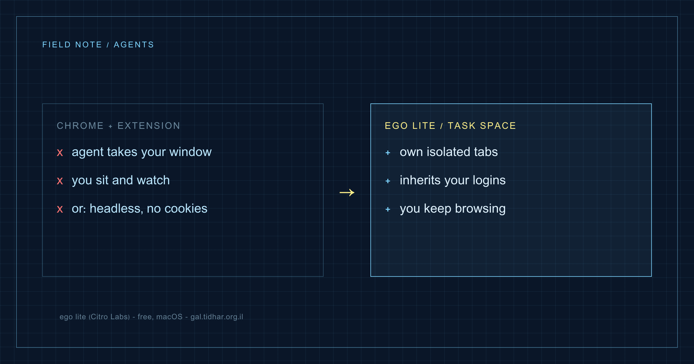

Browser automation · Agents · DX
I stopped giving my agent my browser
Every browser-automation setup I tried made me pick between two bad options: an extension that takes over my Chrome while I sit and watch, or a headless browser that is logged into nothing. ego lite takes a third path - the agent gets its own isolated task space that inherits my login state, and a control model where the user always wins the fight over the wheel.

The two bad options
Option A - the extension. You install a browser extension, the agent drives your actual Chrome window. It works, and it is miserable: the agent has your mouse, so you have your hands off the keyboard for the whole run. It is your daily-driver browser, with your tabs, your session, your half-written email. If it misclicks, it misclicks in your real account. And you cannot do anything else in the browser while it runs, which is exactly the ten minutes you wanted back.
Option B - headless Playwright/Puppeteer. Clean, scriptable, fast, and signed into absolutely nothing. Every useful task starts behind a login, so you spend the first half hour of every automation project shipping cookies into a throwaway profile, wiring a storage-state file, or figuring out how to get a 2FA code into a browser that has no human attached to it. The automation is easy. The authentication is the project.
Both problems are the same problem stated twice: browsers were designed for exactly one driver. Either the agent gets it or you do.
The idea: a task space
ego lite (Citro Labs) is a Chromium browser built for two drivers. The primitive is a task space: an isolated browsing context with its own set of tabs, that inherits the current user's login state by default.
That one sentence does most of the work:
- Own tabs - the agent's pages never appear in, or disturb, your windows. You keep browsing while it works.
- Inherited login - it opens Gmail, GitHub, a client's admin panel, already signed in. You hand over no password and copy no cookie jar.
- Named and resumable - a task space has a name and an id, so a task that takes ten rounds of scripting keeps the same tabs and the same state across all of them.
It also imports multiple browser profiles, each with its own cookies - useful, and the first sharp edge (see the traps below).
The interface is a Node runtime, not a tool call per click
This is the part I underestimated. Most agent-browser integrations expose one tool call per action: click, screenshot, read, type. Each one is a full model round-trip. Twenty interactions is twenty round-trips, and the transcript fills with screenshots.
ego lite gives the agent a CLI-accessible Node runtime instead. The agent writes a real script - loops, conditionals, extraction logic - and runs it in one shot:
ego-browser nodejs <<'EOF'
const task = await useOrCreateTaskSpace('collect open issues')
await openOrReuseTab('https://github.com/org/repo/issues', { wait: true })
// one browser-side pass, one return value
const issues = await js(String.raw`(() => {
return [...document.querySelectorAll('[data-testid=issue-row]')]
.map(el => ({ title: el.innerText, href: el.querySelector('a').href }))
})()`)
cliLog(JSON.stringify(issues, null, 2))
EOFOne round-trip instead of twenty. Dramatically fewer tokens, dramatically faster, and - the underrated part - you can read exactly what it did, because it is a script, not a sequence of opaque clicks.
The helper surface is what you would want: snapshotText() for a semantic tree with stable refs, click / fillInput / pressKey, captureScreenshot() for canvas-like apps where the DOM lies (Google Docs, Figma, spreadsheets), and raw cdp() when nothing else fits.
The part that actually surprised me: the control model
Every task space has an owner, and only one side holds the wheel at a time. That sounds like bookkeeping. It is the whole trust story.
When the agent hits something only a human can pass - a captcha, a 2FA prompt, a payment confirmation - it does not flail or guess. It calls handOffTaskSpace(), control moves to me, and it tells me exactly what to do. I solve it, I say "continue", and it calls takeOverTaskSpace() and picks up where it stopped, in the same tabs.
The inverse is the important half. If I decide mid-run that it is going the wrong way and grab control back through the GUI, every agent operation fails with "user is controlling" - and it is not allowed to take control back on its own. In the skill's own words, that error is a hard stop on the whole task, not an obstacle to route around:
It means the user has deliberately taken the browser back, often because your current approach is going wrong. Honoring it is the correct outcome here; pushing the goal forward anyway is the failure.
A normal extension has no such boundary: the agent can always click again. This is the first browser-automation setup where the stop button is part of the protocol rather than a hope, and it is the only reason I am comfortable pointing an agent at things that matter.
It learns sites
The skill keeps a learnings/ directory - a folder per site, with notes on page structure and selectors, plus reusable scripts. Mine has picked up GitHub, Google and X so far. A note is unglamorous and exactly right:
# X (Twitter) Overview
- Tweet items: [data-testid="tweet"]
- Tweet text: [data-testid="tweetText"]
- Timeline is virtualized: DOM renders visible articles + buffer
- Pinned post is the first [data-testid="tweet"] - skip it only at topThe second time it visits a site it stops probing and just acts. Over weeks, the automation gets cheaper on sites you use often - which are, of course, exactly the ones you automate.
The traps
- Profile roulette. If you imported several browser profiles, the default connection does not reliably pick the one you meant - and a wrong profile means wrong logins and a whole run wasted. Verify identity first (open a signed-in account page and read the email back) before doing anything real.
ego-browser import listprints the profile↔email map. - Rich editors lie in the DOM. Google Docs, Sheets, Notion, Figma expose toolbars, hidden textareas and offscreen iframes that are not the document. Do a tiny write probe and verify with a screenshot before writing anything substantial; if the probe lands in the title bar, switch to screenshot-guided mouse and keyboard.
- Refs expire. The
@Nrefs fromsnapshotText()are only valid for the most recent snapshot. For anything long-lived use the stableloc=value or a plain CSS selector. - Seconds, not milliseconds. Every timeout and wait is in seconds unless the parameter name ends in
Ms. Guess wrong and you wait 20 minutes or 20 milliseconds. - Do not trigger native dialogs. An
alert()/confirm()blocks page JavaScript, which blocks the agent.pageInfo()resolves to{ dialog: ... }when this happens; dismiss it via CDP before continuing. - Close your task spaces. Tabs accumulate across rounds. Finish with
completeTaskSpace(name, { keep: false })unless there is a live page the human genuinely needs.
What I would not do
I would not point this at a genuinely destructive flow and walk away - "the user always wins the wheel" protects you from a runaway agent, not from a correct-looking wrong click that happens in one second. Anything that spends money or deletes data still gets a handoff and my eyes.
And I would not throw away Playwright. For deterministic CI tests against your own app, headless-with-fixtures is still right. ego lite wins on the other axis: ad-hoc work against real, logged-in services, where the auth is the hard part and a human is nearby.
Try it
Free, macOS only for now (there is a Windows waitlist). Install, complete the one-time onboarding - it imports your browser data and puts ego-browser on your PATH - then verify:
command -v ego-browser # usually ~/.local/bin
ego-browser nodejs <<'EOF'
cliLog('ego-browser ready')
EOF